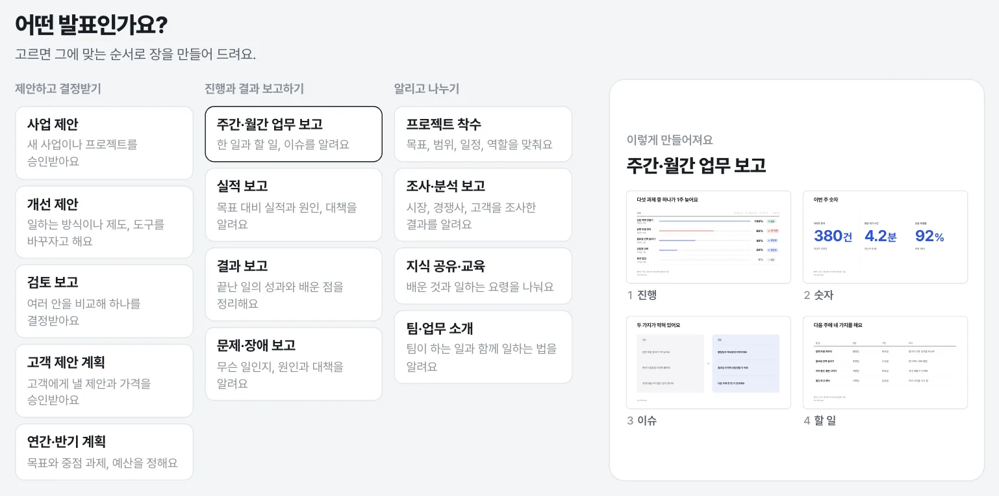
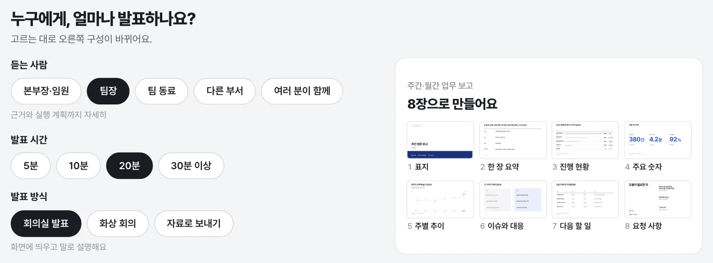
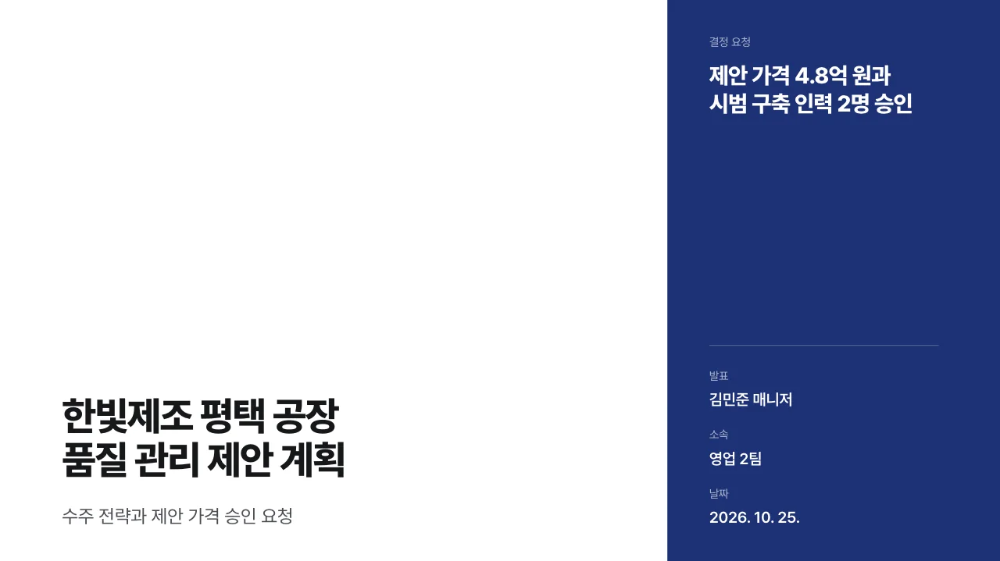

컴포넌트를 놓으면 알아서 맞춰져요
큰 숫자, 전과 후, 차트, 일정, 비교 같은 컴포넌트를 장 위로 끌어다 놓으면 12칸에 맞춰 붙어요. 경계를 끌어 너비를 바꾸면 간격과 글자 크기가 따라 바뀌어요.
칸이 좁아지면 글자를 줄이는 대신 여러 단으로 흘리거나 쌓아서, 어느 크기에서도 읽기 좋게 맞춰요.

빈 슬라이드에서 시작하지 않아요. 묻는 말 몇 가지에 답하면 장이 만들어지고, 사람은 내용만 채우면 돼요.
사업 제안, 주간 업무 보고, 문제·장애 보고, 지식 공유, 팀 소개까지 열세 가지를 회사에서 발표하는 자리대로 묶어 두었어요.

듣는 사람과 발표 시간을 고르면 몇 장으로, 어떤 순서로 갈지 바로 보여요. 본부장 앞이면 결론과 숫자 위주로, 팀 동료 앞이면 할 일과 진행 방법까지 넣어요.

칸마다 무엇을 쓰면 되는지 흐린 글씨로 적혀 있어요. 글자를 눌러 바로 고치고, 남은 빈칸은 ‘다음 빈칸’으로 찾아가요. 고칠 때마다 저절로 저장돼요.

F5를 누르면 전체 화면으로 발표해요. 방향키나 클리커로 넘기고, B나 W를 누르면 화면을 잠시 가려요.

숫자는 크게, 장식은 적게. 흰 바탕과 검은 바탕, 강조색 아홉 가지 가운데 고르면 모든 장이 같은 결로 맞춰져요.
글상자를 밀고 당기지 않아요. 배치와 간격, 글자 크기는 결이 정하고, 사람은 고르기만 해요.
큰 숫자, 전과 후, 차트, 일정, 비교 같은 컴포넌트를 장 위로 끌어다 놓으면 12칸에 맞춰 붙어요. 경계를 끌어 너비를 바꾸면 간격과 글자 크기가 따라 바뀌어요.
칸이 좁아지면 글자를 줄이는 대신 여러 단으로 흘리거나 쌓아서, 어느 크기에서도 읽기 좋게 맞춰요.
3분기 생산이 목표보다 12% 많았어요
2공장, 출하 검사 통과 기준
단위: 만 개
숫자는 굴러가며 맞춰지고, 막대는 차례로 자라요. 움직임 정도를 없음, 차분하게, 생동감 가운데 고르면 장마다 짜인 순서대로 나와요. 같은 컴포넌트가 다음 장에도 있으면 새 자리로 미끄러져 가요.

큰 화면에는 슬라이드만, 노트북에는 지금 장과 다음 장, 노트, 지난 시간이 보여요. 따로 설치하지 않아도 크롬이나 엣지가 두 창을 화면마다 띄우고, 어느 창에서 넘겨도 같이 넘어가요.
미리 보내 두거나 다른 분이 다시 볼 수 있게 파일로 만들어요. 받는 분은 결이 없어도 열 수 있어요.
고칠 때마다 저절로 저장되고, 고치는 중과 발표하기 전에 버전이 남아요. ‘본부장 보고본’처럼 이름을 붙여 두면 언제든 그때로 돌아가요.
보안 자료로 발표를 만드는 자리를 생각하고 만들었어요.
결은 이 PC의 127.0.0.1에서만 돌아요. 같은 네트워크의 다른 PC에서는 들어올 수 없어요.
화면과 내보낸 파일 모두 바깥 주소로 연결하지 못하게 막아 두었어요. 글꼴과 이미지도 안에 들어 있어서 인터넷이 없어도 돼요.
이 브라우저 안과 직접 고른 보관 폴더예요. 어느 서버에도 올리지 않아요.
Claude Code나 Codex에게 장 구성과 모양을 다듬어 달라고 할 수 있어요. 발표마다 직접 켜야 보이고, AI는 제안만 해요. 바뀌는 모습을 미리 보고 ‘적용하기’를 눌러야 바뀌고, 적용 전 상태는 버전으로 남아요.
소스는 모두 GitHub에 공개되어 있어 누구나 확인할 수 있어요. 함께 쓰는 패키지와 글꼴도 MIT, Apache-2.0, BSD, OFL처럼 회사에서 써도 되는 라이선스예요.
설치할 것이 없어요. 실행에 필요한 것이 모두 들어 있어서, 크롬이나 엣지만 있으면 돼요.
‘Windows의 PC 보호’ 창이 뜨면 추가 정보를 누르고 실행을 눌러요. 인터넷이나 메신저로 받은 파일에 붙는 표시라서 그래요.
서명하지 않은 앱이라 처음에는 macOS가 열지 않아요. 시스템 설정 › 개인정보 보호 및 보안에서 아래쪽의 그래도 열기를 누르고, 한 번 더 확인해요.